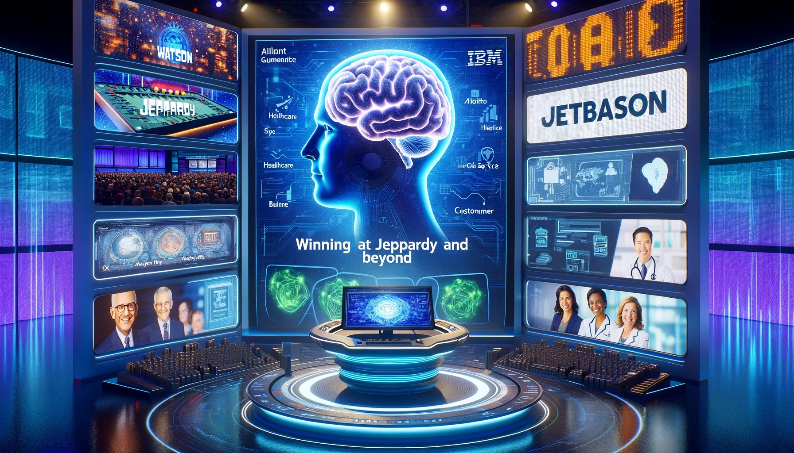
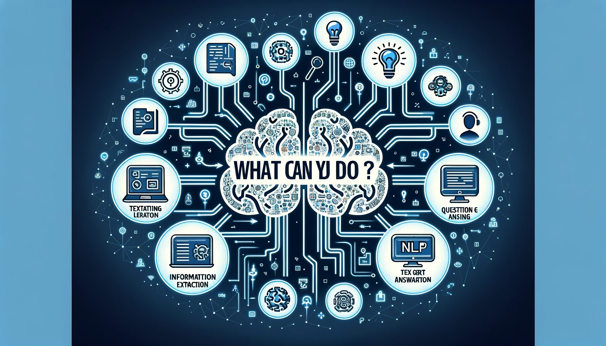
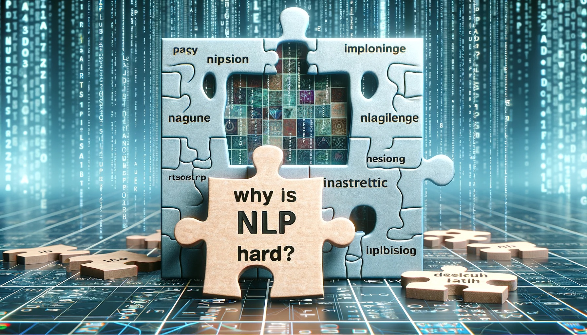
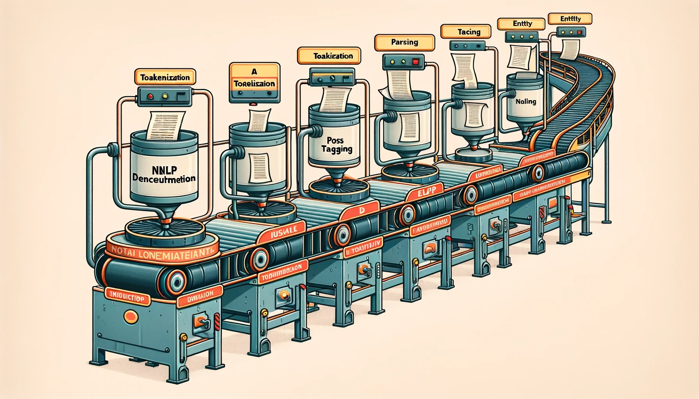

자연어처리의 이해#
자연어처리(NLP) 개요#
자연어처리(NLP)란 무엇인가?#

자연어처리의 정의: 인간의 언어와 상호작용하는 컴퓨터 과학 분야
자연어: 한국어, 영어, 스페인어, 중국어, 힌디어, 아랍어 등
자연어처리의 목적: 컴퓨터가 인간의 언어를 이해하고, 인간과 자연스럽고 직관적인 방식으로 상호작용하게 하는 것
자연어처리의 주요 활용 방법:
언어 분석: 인간 언어로부터 정보와 통찰을 추출
언어 생성: 컴퓨터가 인간과 같은 언어를 생성
자연어 소스로부터의 지식 및 데이터 획득
자연어처리의 실용적 응용:
언어 번역
텍스트 분류
감정 분석
음성 인식
IBM의 왓슨: ‘제퍼디’에서의 승리와 그 이후#
{kind=link}
IBM의 왓슨은 자연어로 질문에 답하는 컴퓨터 시스템
2011년 ‘제퍼디’ 게임쇼에서 인간과 경쟁하여 승리
기계 학습 알고리즘, 딥 러닝 신경망, 자연어처리 활용
왓슨의 의료, 금융, 고객 서비스 등 다양한 분야로의 확장
자연어처리 기술의 잠재력과 인간 지능과의 경쟁 가능성을 입증
자연어처리(NLP)의 관련 분야#

계산 언어학: 자연어처리 및 분석을 위한 컴퓨터 활용 연구
기계 학습: 데이터로부터 학습하고 예측 또는 결정을 내리는 AI의 하위 분야
정보 검색: 대규모 데이터 컬렉션에서 관련 정보 찾기
인지 과학: 인간 언어 처리 및 이해 방법에 대한 연구
음성 처리: 음성 인식 및 합성을 위한 컴퓨터 활용 연구
의미론: 언어의 의미 연구 및 자연어 의미 추론 시스템 구축
자연어처리(NLP)의 목표#

정확성: 자연어 이해 및 생성에서의 정확성
강건성: 언어 사용 및 맥락의 다양성에 강한 시스템
확장성: 대량의 텍스트 데이터 처리 능력
효율성: 메모리 사용 및 계산 시간의 효율성
해석 가능성: 시스템의 내부 작동의 투명성
적응성: 새로운 작업 및 도메인에 대한 적응력
다언어성: 다중 언어 처리 능력
윤리적 및 사회적 책임: NLP의 윤리적, 사회적 책임 있는 개발 및 사용
NLP의 윤리적 문제#

개인 정보: 개인 데이터 분석 및 처리의 위험
편견: 훈련 데이터에존재하는 편견의 상속 및 확대
조작: 가짜 뉴스 또는 선전과 같은 허위 또는 오해의 소지가 있는 정보 생성
이러한 윤리적 문제에 대처하기 위해 다양한 전략이 필요
NLP를 연구하거나 공부하는 이유#
{kind=link}
실용적 응용: 다양한 실용적 응용 분야
지속적 혁신: 끊임없이 진화하는 분야
학제 간 특성: 언어학, 컴퓨터 과학, 심리학 등 다양한 분야의 융합
언어의 비밀 해제: 언어 이해 및 인간 지능에 대한 이해 증진
커뮤니케이션 및 사회적 상호작용 개선: 효율적인 커뮤니케이션을 위한 시스템 구축
NLP로 할 수 있는 것들#
{kind=link}
이해#
텍스트 분류: 자동으로 텍스트를 다양한 카테고리로 분류
정보 추출: 구조화되지 않은 텍스트에서 구조화된 정보 추출
질문 응답: 자연어로 된 질문에 자동으로 답변
감정 분석: 텍스트의 감정 또는 정서적 톤 자동 판단
생성#
텍스트 생성: 챗봇이나 자동 요약과 같은 자연어 텍스트 생성
음성 합성: 서면 텍스트를 음성으로 변환
번역#
기계 번역: 한 언어에서 다른 언어로의 텍스트 자동 번역
음성 인식: 구어를 텍스트로 변환, 이후 추가 처리 및 분석 가능
기타 작업#
텍스트 전처리: 불용어 제거, 스테밍, 토크나이징 등을 통한 원시 텍스트 데이터 전처리
명명된 개체 인식: 사람, 조직, 위치와 같은 명명된 개체 식별 및 분류
주제 모델링: 문서 컬렉션에서 잠재적 주제 자동 발견
언어 모델링: 단어 시퀀스의 확률 모델링, 음성 인식이나 기계 번역 등의 작업에 활용
텍스트와 이미지: NLP를 위한 학제 간 기술#

이미지 캡셔닝: 이미지의 시각적 내용을 설명하는 텍스트 생성 과정
시각적 질문 응답 (VQA): 이미지에 대한 질문에 답변하는 작업
시각적 대화: 이미지에 대해 인간과 기계 에이전트 간의 대화 생성
자연어처리(NLP)의 이해와 도전#
텍스트 이해의 기본#

텍스트 이해의 중요성: 자연어처리(NLP)에서 텍스트를 이해하는 것은 필수적인 기능
문맥 이해: 문장이나 문단의 전체적인 맥락을 파악하는 능력
추론 능력: 텍스트에 명시적으로 표현되지 않은 정보를 추론하는 능력
배경 지식의 중요성: 텍스트를 이해하는 데 필요한 선행 지식이나 경험을 활용하는 것
비판적 사고: 텍스트의 신뢰성을 평가하고 다양한 관점을 고려하는 능력
NLP가 어려운 이유#
{kind=link}
언어의 모호성: 단어나 구절의 다양한 의미를 정확하게 해석하는 것이 어려움
언어의 변화성: 새로운 단어와 표현이 지속적으로 생겨나며, 이를 NLP 시스템이 적응해야 함
언어의 복잡성: 언어는 음운부터 담화에 이르기까지 다양한 수준의 구조를 가짐
문화 및 역사적 맥락의 중요성: 텍스트의 의도된 메시지를 이해하기 위해서는 문화적 및 역사적 맥락을 이해해야 함
데이터의 질과 양의 영향: NLP 모델의 정확성은 훈련 데이터의 질과 양에 크게 의존
모호성과 그 처리 방법#

단어의 의미 모호성: 같은 단어가 다른 의미를 가질 수 있음
품사의 모호성: 동일한 단어가 서로 다른 품사로 사용될 수 있음
구문 구조의 모호성: 같은 단어들이 다르게 구성될 때 다른 의미를 가질 수 있음
비확률적 방법: 모든 가능한 해석을 반환하고, 사용자가 선택하도록 함
확률적 모델: 가장 가능성 높은 해석을 반환
정확한 확률의 중요성: 모델의 정확성은 확률의 정확성에 의존
말뭉치(Corpora)와 데이터의 중요성#

말뭉치의 정의: 텍스트의 모음
말뭉치의 종류: 일반 말뭉치, 도메인 특화 말뭉치, 트리뱅크, 병렬 말뭉치 등
확률 모델의 근거: 통계적 분석을 통해 언어 패턴 학습
데이터의 질과 양: 정확도 향상을 위해 고품질의 대량 데이터 필요
언어의 다양성 대응: 다양한 언어와 문화에 대한 이해 필요
전통적 NLP 파이프라인#
{kind=link}
토크나이저/세분화기: 단어와 문장의 경계 식별
형태소 분석기/품사 태거: 각 단어의 품사 및 구조 식별
단어 의미 분별: 모호한 단어의 정확한 의미 식별
구문/의미 분석기: 문장의 구조와 의미 분석
공통 참조 해결/담화 모델: 텍스트 내의 엔터티와 사건 추적
한국어 NLP의 도전 과제#

복잡한 문법 체계: 존댓말과 격식에 따른 동사 변화 등
어휘의 모호성: 동일한 단어가 다른 의미를 가질 수 있는 상황
공백의 임의성: 공식적인 문법 규칙에 따르지 않는 공백 사용
한정된 훈련 데이터: 고품질의 대량 한국어 데이터 부족
자원의 제한성: 한국어를 위한 NLP 도구와 자원의 부족
저자원 언어에서의 NLP#

저자원 언어의 정의: 충분한 언어 자원이 부족한 언어
도전 과제: 언어 자원의 부족으로 인한 NLP 모델 성능 저하
새로운 접근 방법: 전이 학습, 비지도 학습, 데이터 증강 등의 기술 활용
윤리적 고려 사항: 편향과 차별을 줄이기 위한 고민 필요
다양성 증진 노력: 저자원 언어를 지원하기 위한 지속적인 연구 필요
자연어처리(NLP)의 응용분야#
검색 엔진#

검색 쿼리 처리: 사용자의 검색 쿼리를 분석하여 관련 웹 페이지와 연결
스니펫 생성: 웹 페이지의 요약이나 스니펫을 생성하여 사용자에게 정보 제공
의미 분석: 검색어의 의미를 이해하여 더 정확한 검색 결과 제공
언어 다양성 대응: 다양한 언어의 검색 쿼리를 처리할 수 있는 능력
개인화된 검색: 사용자의 과거 검색 기록 및 선호도에 기반한 맞춤형 검색 결과 제공
가상 비서#

음성 명령 이해: Siri, Alexa와 같은 가상 비서가 사용자의 음성 명령을 이해
자연스러운 대화 가능: 사용자와 자연스러운 대화를 나누며 필요한 정보 제공
다중 언어 지원: 다양한 언어를 지원하여 전 세계 사용자와 상호 작용
스마트 홈 제어: 음성 명령을 통한 스마트 홈 장치 제어
개인화된 응답: 사용자의 선호도 및 이전 대화 기록을 기반으로 한 맞춤형 응답 제공
소셜 미디어 분석#

트렌드 감지: 소셜 미디어에서 유행하는 트렌드를 식별
감정 분석: 게시물 및 댓글에서 사용자의 감정 상태 분석
인플루언서 식별: 영향력 있는 사용자 식별
컨텐츠 추천: 사용자의 관심사 및 활동을 분석하여 관련 컨텐츠 추천
시장 조사: 소비자의 의견 및 피드백을 분석하여 제품 개발 및 마케팅 전략 수립
고객 서비스#

챗봇 운영: 자동화된 챗봇을 통한 신속한 고객 문의 응답
자연스러운 대화 체계: 사용자의 질문을 이해하고 적절한 답변 제공
FAQ 자동 처리: 자주 묻는 질문에 대한 자동 응답 제공
고객 만족도 향상: 신속한 대응을 통한 고객 만족도 향상
데이터 분석: 고객 상담 데이터를 분석하여 서비스 개선
컨텐츠 모더레이션#

부적절한 내용 감지: 욕설, 폭력적 내용 등 부적절한 컨텐츠 자동 감지 및 제거
사용자 보호: 해로운 컨텐츠로부터 사용자 보호
효율성 향상: 인간 모더레이터의 작업 부담 감소
지속적인 학습 및 개선: 새로운 유형의 부적절한 컨텐츠에 대응하기 위한 지속적인 학습
다양한 언어 지원: 다양한 언어의 컨텐츠 모더레이션 지원
의료 분야#
{kind=link}
전자 건강 기록 분석: 환자의 전자 건강 기록에서 중요 정보 추출
환자 피드백 분석: 환자의 리뷰 및 피드백 분석을 통한 의료 서비스 개선
임상 의사 결정 지원 시스템 개발: 의료 데이터 분석을 통한 의사 결정 지원
질병 예측 및 진단: 환자 데이터를 분석하여 질병 예측 및 진단
개인화된 의료 서비스: 환자 맞춤형 치료 계획 수립 지원
금융 분야#

금융 데이터 분석: 뉴스 기사, 소셜 미디어 게시물 등에서 금융 데이터 분석
투자 결정 지원: 시장 동향 및 여론 분석을 통한 투자 결정 지원
위험 관리: 금융 위험 요소 식별 및 관리
자동화된 거래 시스템: 시장 데이터 분석을 통한 자동 거래 시스템 개발
사기 탐지: 이상 거래 패턴 감지를 통한 금융 사기 예방
법률 분야#
{kind=link}
전자 발견(e-discovery): 법적 문서에서 관련 정보 추출
문서 검토 자동화: 대량의 법적 문서 자동 검토
계약 분석 자동화: 계약 문서의 중요 조항 자동 분석
법적 자문 제공: 법률 관련 질문에 대한 자동 응답 시스템
사례 연구 분석: 법률 사례의 데이터 분석 및 판례 연구 지원